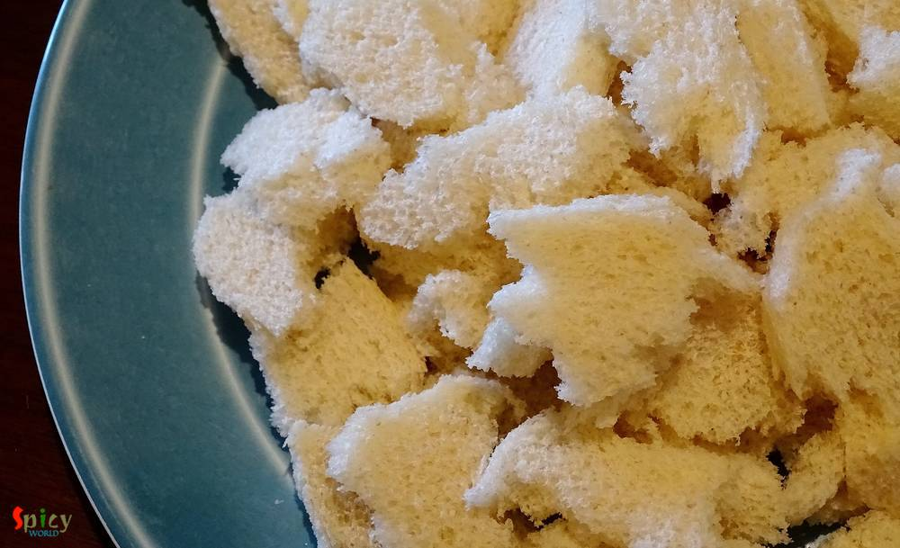
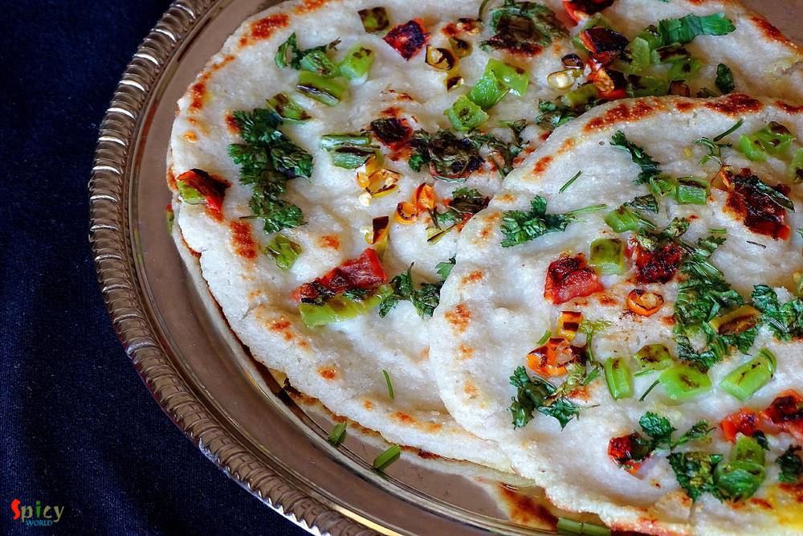

Simple and Easy Recipes
Bread Uttapam / Instant Bread Dosa
© 2016 Spicy World, Published on: May 12, 2016
I was drawn towards this dish because of its easy method of cooking. In weekdays I never manage my time to make 'breakfast', but when I found out about this recipe where dosa batter doesn't need any farmentation ... I was interested ! You just have to rest the batter for 10 minutes, after that you can make your delicious breakfast in no time. One of the famous south indian breakfast is 'uttapam'. They are very healthy and almost oil free. In this dish bread is the main ingredient and that's why the recipe is so simple. You can make plain uttapam or like me, you can top them with any topping of your choice. Try this easy breakfast recipe in your kitchen and spend your morning without any fuss !

Ingredients
- 6 white bread slices.
- 4 Tablespoons of curd.
- 3 Tablespoons of semolina / sooji.
- 2 Tablespoons of all purpose flour / maida.
- Pinch of baking soda.
- Salt.
- Toppings (chopped capsicum, tomato, green chilies, coriander leaves).
- 2 Teaspoons of oil.
- Water.

Steps
Get rid of the sides of bread and break them into small pieces.
Put them in a blender and blend till they become breadcrumb. Remove it in a plate and keep aside.
Take curd, semolina, flour, salt and baking soda in a mixing bowl.
Add water into the bowl, mix and make a thin batter.
Let the batter rest for 10 minutes.
Then add that breadcrumbs into the batter. Mix well.
If the batter becomes very thick you can add little water. Do not rest the batter after mixing the breadcrumbs.
Heat half Teaspoon of oil in a flat pan (non stick).
Put 3 - 4 Tablespoons of batter in the hot pan. With a help of a spoon, spread it to a semi thin disk.
Then add some toppings of your choice and let it cook for 3 minutes on medium flame.
Then flip it to the other side, gently press it with a spatula and cook for another 2 minutes.
Remove it from the pan and serve hot. You can make 3 / 4 medium size uttapam out of this batter.
Your bread uttapam is ready ...
Enjoy them hot with some chutney or vegetable curry ...
")